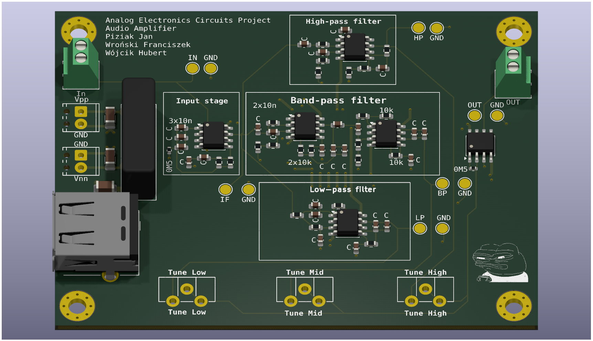
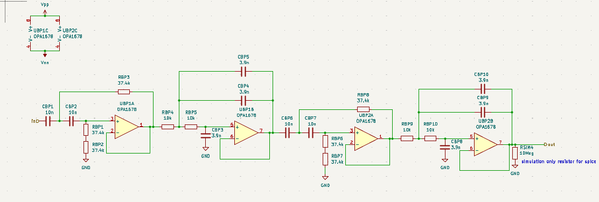
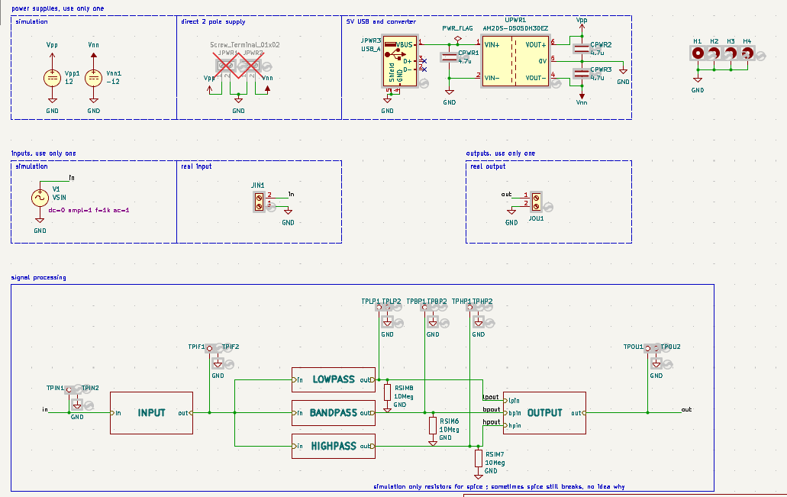
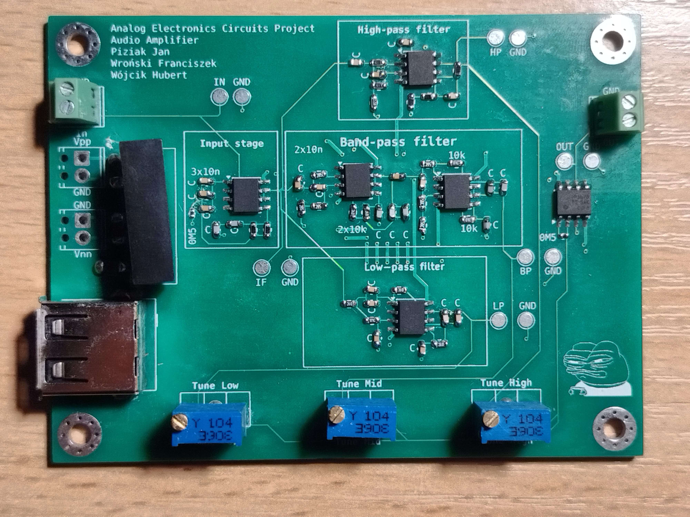
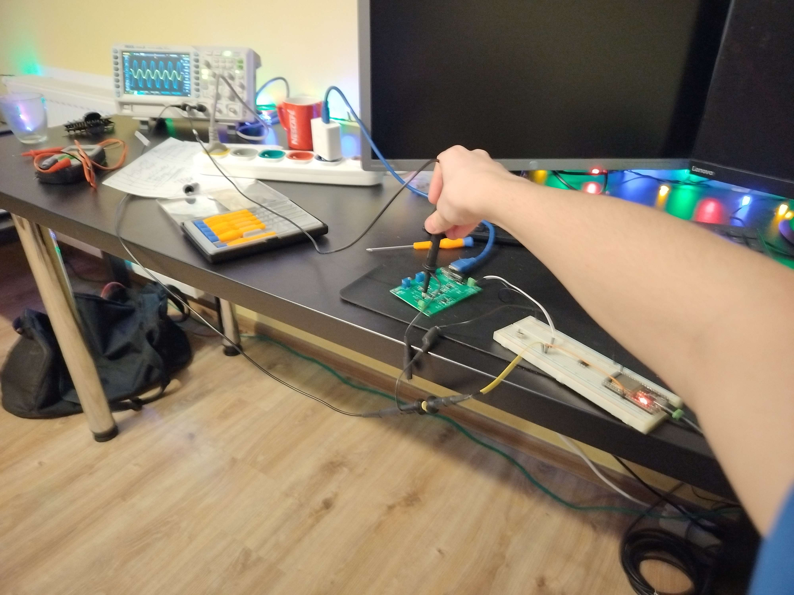
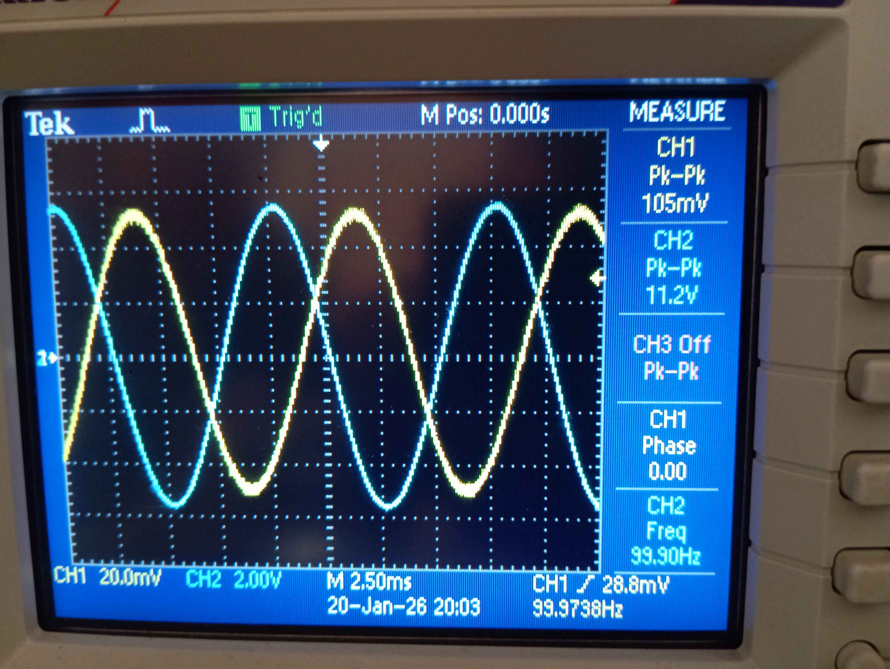
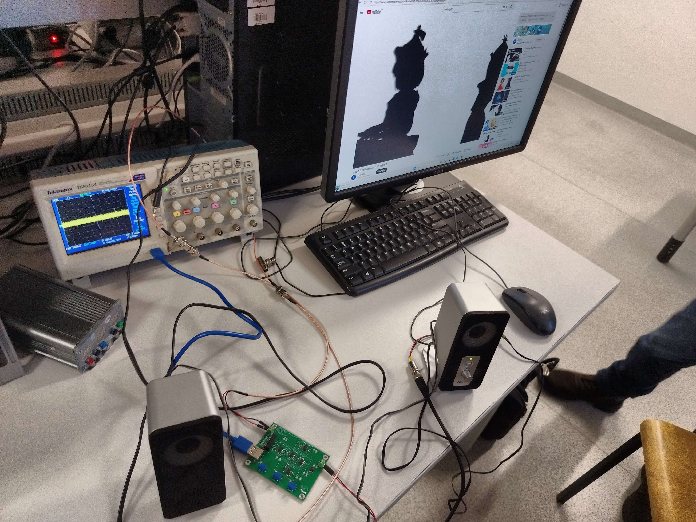
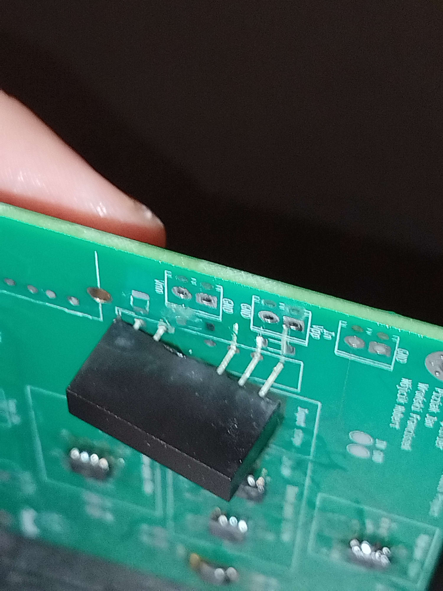

This was the first somewhat complicated analog project I have ever developed. It was created as part of Analog Electronic Circuits course at my uni.
It is an audio amplifier with separate gain (in the range of 10V/V to 100V/V) control for 3 frequency ranges centered around 0.1KHz, 1KHz, and 10kHz. The project uses opamps to do all the filtering and amplifying.
It was group project and it was developed with:
And another person provided highly valueable research: //I wish I worked on my cpu more, but it is what it is; at least I have other cool projects now :D
We had to provide audio amplification with separate gain control for 3 frequency ranges centered at 0.1kHz, 1kHz, and 10kHz. Additionally the whole filter must be able to provide flat gain-frequency response within full operational range.
Easy enough. Just provide 3 typical opamp filters and then sum them up.
This did not work.
The first problem was using 1st order filters, unfortunately 20dB/dec rollof does not work with flat response. Since we have to support difference of 20dB between 1kHz and 10kHz, the poles MUST be at 1kHz and 10kHz (otherwise the filter does not decay/rise fast enough). Since we have poles at 1kHz and 10kHz, in equal setting, there is 10dB drop from each at half the decade. 10dB drop is about 0.3 of amplitude, summing 2 signals leads to at most 0.6 of amplitude at center frequencies, thus not satisfying flat response.
This means we had to use at least 2nd order filters.
Easy enough. Just put two of the same filters in series, achieving 2nd order filter.
This did not work.
The next problem was phase mismatch, at the intersection of bands signal were shifted such that they started to subtract, thus violating flat gain-frequency response.
Solving this took a bit of research and internet scouring, but finally someone found Linkwitz Riley Filters with proper phase response.
This was the solution.
//LR filters we used are actually 4th degree filters, but for some reason it works

As usual, I developed the schematic with kicad which quickly became one of my favorite tools, but this time it crashed a few times while FAFOing in simulation :(
The schematic is mostly the same thing as we obtained during design phase, but it was adjusted somewhat with non ideal component due to cost constraints. It also contains few PCB only constructs and I really love how easy it is to integrate simulation into PCB design.
One somewhat interesting thing is the additional 5V to +-5V converter, used to allow for powering with USB-A.
//genuinely that is allAs above, not much interesting happened here, although this is a point where my knowledge gets heavily limited, we used dual pole power supply, should we still use ground plane? or should we use negative pole of power supply as the ground? I do not know and we did not have time to do the research, so we poured ground plane and ccalled it a day.
Surprisingly most routing was possible on single layer.
//high frequency pcb is still black magic and vibes to me tbf

Testing it required some signal generator, unfortunately I do not have it at home so I quickly threw up one with ESP32, it is surprisingly easy. Then I simply probed each output and checked on osciloscope what is the amplification. It worked first try!
Major downside of my testing setup is with ESP32 cosine signal generator and 5V power supply I cannot possibly go higher than 50x amplification as the output saturates, still a very good result.

During project showcase at uni we have tested full range of operations, we have also ran FFT on the output and found no meaningful distortion.

As a final test, we have connected some actual audio output from PC and amplified it, of course it had to be bad apple.
The very best thing is that it works.
The maximum amplification and attenuation range is actually larger than required, but due to using 40dB/dec filters, it is impossible to achieve higher difference in amplification of different bands than 10x.

Lack of power LED, it is impossible to tell whether board works in some way without connecting actual signal.
Lack of series resistance for potentiometers, the gain can get too high and influence other bands.
//and some other minor problems with schematic main go back